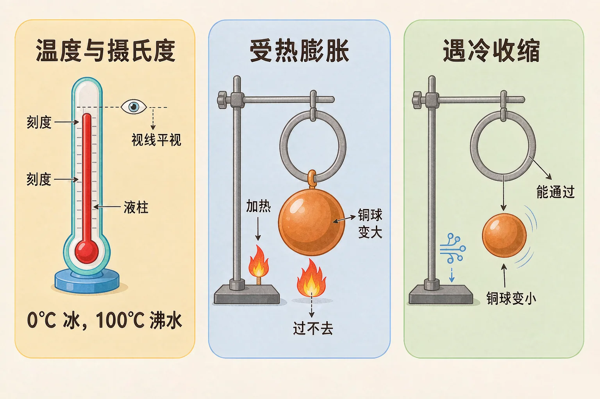
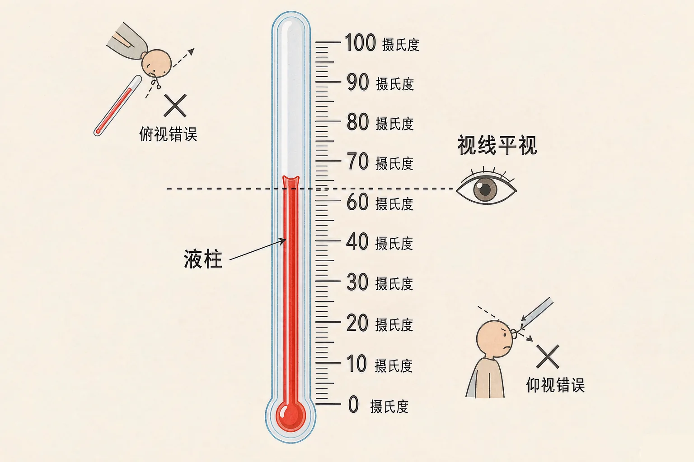
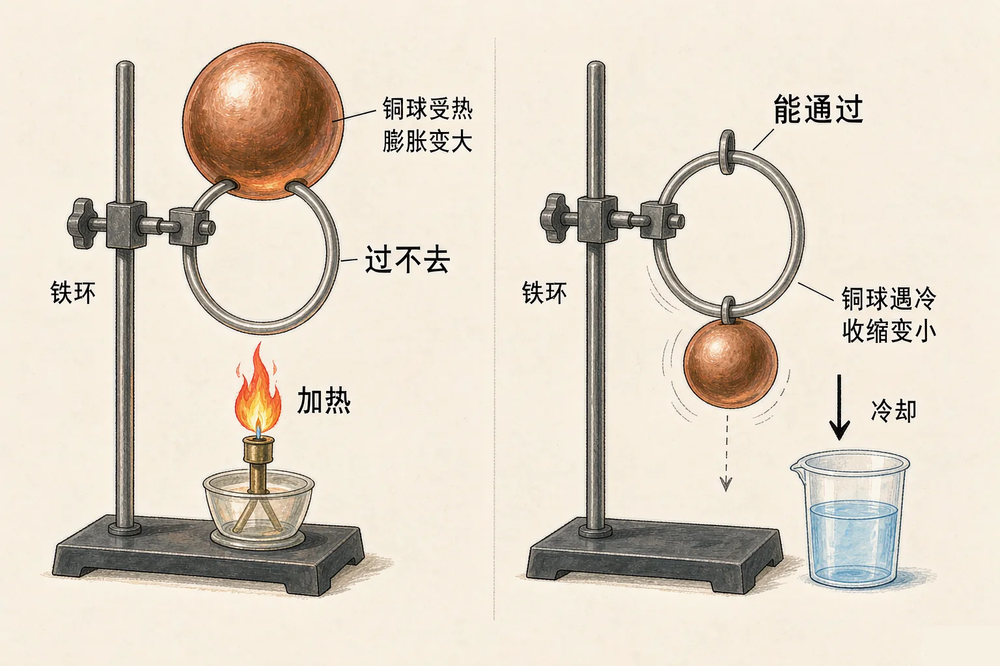

小学四年级 · 物质科学 · 热与能量
浇了热水，拧不开的瓶盖为什么就松了？温度计里的液柱为什么会自己升降？

选一个你真正好奇的问题，后面的实验都会围着它转。
选择或输入后，这节课会围绕你的问题展开。
先凭直觉选一个，选完立刻看到解释——错了也没关系，正好知道要重点听哪里。
1. 要知道一杯水有多热，下面哪种做法最可靠？
温度计能给出准确的度数，手感会被很多东西干扰。错因提醒：很多同学误认为手的感觉很准，其实同一杯温水，左手刚从冰水里拿出来会觉得它烫，右手刚从热水里拿出来又觉得它凉——所以不能只靠感觉。
2. 读温度计时，视线应该怎么放？
视线与液柱上表面相平时读数才准确。错因提醒：俯视会让读数偏大，仰视会让读数偏小，这是读数时最常见的错误，注意不要跟看量筒的方法搞混。
3. 把一壶水烧开，水的温度升高，水的体积会：
一般物体受热体积会膨胀，水也是一样。错因提醒：这个现象很容易被忽略。注意水和大多数物体一样是热胀冷缩，但水结成冰时体积反而会变大，这是一个特别的例外。
温度就是物体的冷热程度。要把它量出来，需要用温度计，单位是摄氏度，写作 ℃。
怎么看刻度
先看清一小格代表多少摄氏度，再从液柱上表面所在的位置数出格数。
视线怎么放
视线要和液柱的上表面保持水平，俯视偏大、仰视偏小。

🔍 深层理解 换个角度再看一遍这件事，看看能不能说出背后的原理。
看见它：体温计、气温计、厨房用的探针温度计，刻度范围各不相同，但读数的方法完全一样：平视液柱上表面。
比较它：温度计和尺子有点像：尺子量长度，温度计量冷热。它们都要先看清一小格代表多少，再数格数。
迁移它：气象站每天记录的空气温度、冰箱冷藏室的 4 ℃、发烧时的 38 ℃，都是同一个单位在说话。
先拖动滑块，让红色液柱升上去、降下来，看看刻度怎么对准。然后点出题，检验一下你能不能读准。
请读出这支温度计示数，从下面三个答案里选一个。
选完答案会立刻告诉你对不对，还会指出错在哪里。
把铜球烤一烤，它就从铁环里过不去了；把它放进冷水凉一凉，又能钻过去。这个变化有个名字，叫热胀冷缩：受热膨胀，遇冷收缩。

水结冰是个例外：水结成冰以后体积反而变大。所以装满水的玻璃瓶放进冰箱冷冻会撑裂。不要误认为所有情况都严格是热胀冷缩，遇到水要多想一步。
先点加热，看看铜球还能不能穿过铁环；再点冷却，看看它能不能又钻过去。最后切换到液体温度计，看看液柱是怎么动的。
题目：工人铺铁轨的时候，会在两段铁轨之间留一道小小的缝隙。这是为什么？请说明理由。
有同学写成是为了让火车开过去时有声音，或者误认为是铁轨没铺好、留错了。这都是没有抓住热胀冷缩这个原因。以后遇到铺铁轨、架电线、装玻璃窗这类题目，第一反应就该想到热胀冷缩。
先凭直觉选一个，选完立刻看到解释——错了也没关系，正好知道要重点听哪里。
1. 下面哪句话是正确的？
热胀冷缩改变的是体积，不是轻重。错因提醒：很多同学把体积和重量搞混了——铜球烤过以后还是同一个铜球，它没有变重，只是胀大了一点点。
2. 关于温度计，下面说法正确的是：
液柱升高是液体受热膨胀的结果，玻璃管本身几乎不变。错因提醒：常见错误是误认为玻璃管变长了。真正发生变化的是里面的液体，玻璃管只是一个细细的容器。
3. 夏天架设电线时，工人会把电线放得松一些。这是因为：
冬天电线收缩变短，如果夏天绷得太紧，冬天就可能被拉断。错因提醒：容易搞混的是方向——这里要预防的是冬天收缩，所以要在夏天留出余量。
请你找出家里三个热胀冷缩的例子，再解决一个真实的小麻烦：玻璃瓶的金属盖拧不开。
第一步：找出三个例子
第二步：解决瓶盖拧不开的麻烦
写出你的办法，并说清楚道理：是谁膨胀了？为什么膨胀以后盖子就松了？
第三步：说给同桌听
用「温度、膨胀、收缩」这三个词，把上面两个任务连起来讲一遍。
先凭直觉选一个，选完立刻看到解释——错了也没关系，正好知道要重点听哪里。
1. 体温计上的示数是 36.8 ℃，它表示：
摄氏度的符号是 ℃，读作摄氏度，它是温度的单位。错因提醒：常见错误是把单位搞混，℃ 既不是质量单位也不是长度单位。
2. 一个乒乓球被压瘪了，把它放进热水里，它又鼓了起来。原因是：
球内空气受热膨胀，把瘪下去的地方顶了起来。错因提醒：很多同学误认为只是外壳变软，其实起主要作用的是球里的空气膨胀。如果球破了一个小洞，这个方法就不管用了。
3. 把装满水的塑料瓶放进冷冻室，瓶子可能会被撑变形。这是因为：
水结冰时体积会膨胀，所以装满水的瓶子容易被撑坏。错因提醒：这是热胀冷缩最容易被搞混的例外——水在结冰时是逆着来的，体积反而变大。所以瓶里装水不要装太满再冷冻。
回到开头那两个问题：瓶盖能拧开，是因为金属盖子受热膨胀，比玻璃瓶胀得多一点，于是松了；温度计的液柱会升降，是因为里面的液体受热膨胀、遇冷收缩。两件事用的是同一条规律。
给别人讲一遍：请用「温度、膨胀、收缩」这三个词，说清楚铁轨为什么要留缝隙。
三层练习，做完第一、二层就算通关；第三层留给愿意继续探索的同学。
⭐ 基础巩固（必做）
⭐⭐ 能力应用（必做）
⭐⭐⭐ 迁移挑战（选做）
左边是学它之前要先会的，右边是学会之后可以继续探索的，下面是同一领域的伙伴知识。